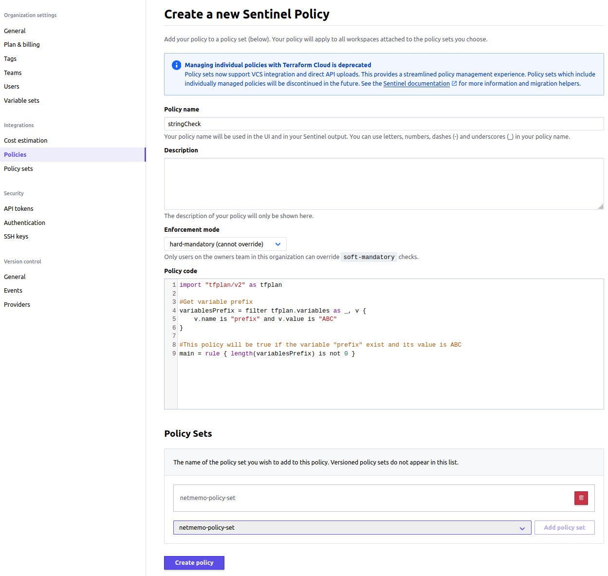

In this third and last post of the serie, I will describe how to move the Sentinel policy into the production environment.
This serie is made of 3 posts:
THE PRODUCTION ENVIRONMENT
When your policy is ready, you then need to deploy it into production. you can write a policy set that you will store to a VCS (version control system) or you can add the policy individually in the GUI and attach it to the a policy set that you would have created on the GUI.
VCS Policy set
For the VCS policy set, once you have created the policy, you then need to create a repository on a VCS. In this repository you will have 2 kind of files. The policies with the .sentinel extension and the configuration file sentinel.hcl. In the .hcl you only need to specify the source file that will define the policy and the enforcement_level. As hard-mandatory is the default enforcement level we can even omit it.
policy "first_pol" {
source = "./first_pol.sentinel"
enforcement_level = "hard-mandatory"
}
The repository will look like :
.
├── first_pol.sentinel
└── sentinel.hcl
GUI policy set and policy
If you don’t want to use a VCS, you need to create the policy set and the policy through the GUI. Follow the below steps.
1. Create the policy set
Create the policy set and attach it the the right workspace, in our case netmemo-sentinel
{kind=link}
{kind=link}
2. Create the policy
Create the policy and attach it the the right policy set, in our case netmemo-policy-set

{kind=link}
Example
Once the policy is ready, you can plan the Terraform configuration. If the policy pass you should have the below output
<snip>
------------------------------------------------------------------------
Organization policy check:
================ Results for policy set: <empty policy set name> ===============
Sentinel Result: true
This result means that all Sentinel policies passed and the protected
behavior is allowed.
1 policies evaluated.
## Policy 1: stringCheck (hard-mandatory)
Result: true
./stringCheck.sentinel:9:1 - Rule "main"
Description:
This policy will be true if the variable "prefix" exist and its
value is ABC
Value:
true
If the policy fail you should have the below output
<snip>
------------------------------------------------------------------------
Organization policy check:
================ Results for policy set: <empty policy set name> ===============
Sentinel Result: false
This result means that one or more Sentinel policies failed. More than likely,
this was due to the discovery of violations by the main rule and other
sub-rules. Please see the details of the policies executed below to find the
violation(s), which is usually indicated by a rule with a false boolean value,
or non-zero collection data.
1 policies evaluated.
## Policy 1: stringCheck (hard-mandatory)
Result: false
./stringCheck.sentinel:9:1 - Rule "main"
Description:
This policy will be true if the variable "prefix" exist and its
value is ABC
Value:
false
╷
│ Error: Organization policy check hard failed.
│
│
╵